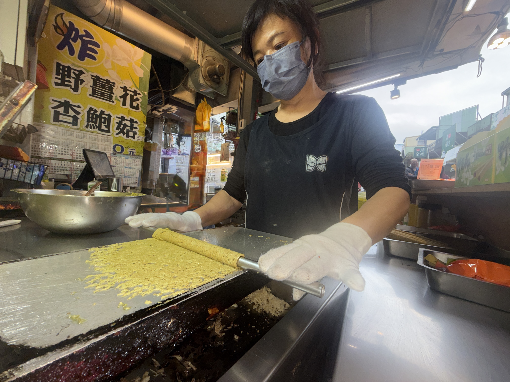

把野薑花香，捲進每一根蛋捲裡。
我們想做的是一份「能被帶走的香氣」：清淡花香且不厚重。 讓你在層層酥脆的口感裡，慢慢品嘗到野薑花的味道。
品牌故事
在內灣，有些味道不是被發明出來的，是用心反覆試出來的。 我們的創始店小到像一個藏在路邊的秘密，沒有華麗的裝潢，背後支撐的是一整片野薑花田 —— 風一吹，花香像浪一樣湧過來，清、暖、帶一點山裡才有的野氣。 那時候我們做的很單純：把剛摘下的野薑花裹粉下鍋，炸到金黃，一口咬下去「喀滋」作響，香氣直接衝上鼻尖——那不是香精，是田裡的早晨，是土地的呼吸。
那時，心裡卻只想著一件事 —— 我們明明擁有整片新鮮栽種的野薑花，為什麼不能讓這朵花，被更多人用更長久的方式記住？於是，經過反覆試驗，我們將「花」捲進蛋捲裡，變成一種會留在嘴巴很久的溫柔。
我們不是把花香做重，而是做「對」。讓野薑花的清香不被甜膩埋掉，讓蛋香變成襯底，讓每一次咬下去都像走進花田 —— 先聞到蛋香，再聽到脆響，最後在喉嚨深處留下淡淡回甘。失敗很多次，改了很多次，只為了抓到那個只有新鮮花才做得到的瞬間：乾淨、清透、讓人想閉上眼睛的香。 野薑花蛋捲，就是這樣誕生的。
它不是「口味」而已，它是一段路：從內灣的小店、再折返回花田裡的決心。把季節捲起來，把內灣的風捲起來，把我們那份不願將就的心意，一層一層，捲給你。
如果你問濃濃香是什麼？ 我們只是想讓一朵野薑花，不只盛開在田裡，也盛開在你記得的味道裡。
我們的堅持
- 風味乾淨：不走厚重香精感，重視入口後的餘韻
- 口感層次：手作多層酥脆，越嚼越香
- 送禮體面：簡約質感，讓口味成為記憶點
早期回憶照